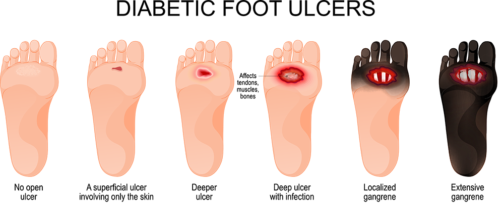
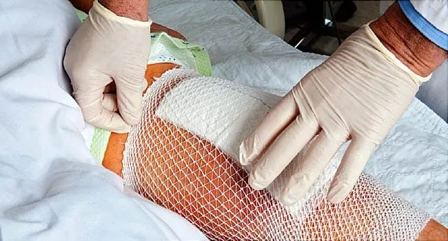
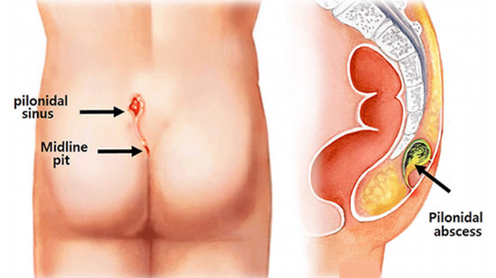

Problem Statement
⚠️ Content warning: This page contains educational references to real medical conditions and wound care.
Images used are non-graphic and intended for learning and awareness.
Post-Operative Wound Care at Home
- Patients are discharged early and expected to manage wound care independently.
- Daily dressing and hygiene are required to prevent bacterial infection.
- Subtle signs of infection (temperature/moisture changes) often go unnoticed.
- Repeated hospital visits for simple dressing increase cost, time, and stress.
General Case Study (Student Experience):
After pilonidal sinus surgery, consistent wound dressing and hygiene were required for several weeks.
Any lapse in care risked infection. Recovery involved frequent hospital visits purely for dressing,
making the process exhausting, time-consuming, and heavily dependent on supervision.
Diabetic Foot Ulcers
- Reduced sensation in diabetic patients causes delayed detection of wounds.
- Moisture buildup and local temperature rise indicate early infection risk.
- Minor injuries can escalate into ulcers due to poor circulation and delayed care.
- Late intervention can lead to severe complications and amputations.



Educational references only • Non-graphic • For awareness
Why Current Approaches Fall Short
- Manual monitoring depends on patient discipline and awareness.
- No continuous feedback on wound environment (moisture and temperature).
- Caregivers receive delayed or incomplete information.
- Existing solutions are costly, clinic-bound, or impractical for daily home use.